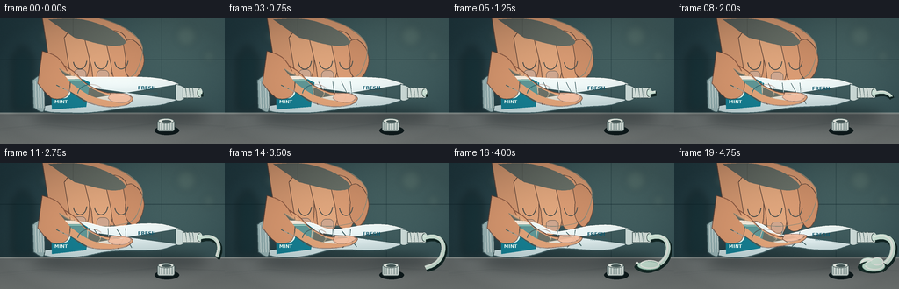
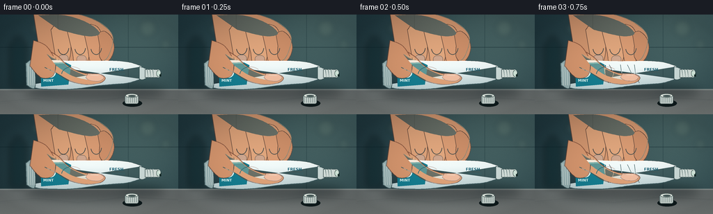

CODING AGENTS AS PIXEL WORLD MODELS
traex/GPT-5.6-Sol · phygen_014
点击播放 · 原生 RGB 像素
逐轮保存的候选
回放视频、检查图与代码变化。
每份候选均可单独播放。实际图片检查记录在下方工具轨迹中。
候选 01播放与检查图
点击播放 · 原生 RGB 像素


展开代码变化
--- 上一保存版本
+++ 本次保存版本
@@ -0,0 +1,265 @@
+from pathlib import Path
+import math
+import numpy as np
+from PIL import Image, ImageDraw, ImageFont, ImageFilter
+import artifact_io
+
+W, H, N = 256, 144, 20
+S = 4
+SW, SH = W*S, H*S
+ROOT = Path(__file__).resolve().parent
+
+
+def sc(v): return int(round(v*S))
+def box(b): return tuple(sc(v) for v in b)
+def pts(seq): return [(sc(x), sc(y)) for x,y in seq]
+
+def font(size, bold=False):
+ p = '/usr/share/fonts/truetype/dejavu/DejaVuSans-Bold.ttf' if bold else '/usr/share/fonts/truetype/dejavu/DejaVuSans.ttf'
+ return ImageFont.truetype(p, sc(size))
+
+
+def catmull(points, steps=12):
+ p = [points[0]] + points + [points[-1]]
+ out=[]
+ for i in range(1,len(p)-2):
+ a,b,c,d=p[i-1],p[i],p[i+1],p[i+2]
+ for j in range(steps):
+ t=j/steps; t2=t*t; t3=t2*t
+ x=.5*((2*b[0])+(-a[0]+c[0])*t+(2*a[0]-5*b[0]+4*c[0]-d[0])*t2+(-a[0]+3*b[0]-3*c[0]+d[0])*t3)
+ y=.5*((2*b[1])+(-a[1]+c[1])*t+(2*a[1]-5*b[1]+4*c[1]-d[1])*t2+(-a[1]+3*b[1]-3*c[1]+d[1])*t3)
+ out.append((x,y))
+ out.append(points[-1]); return out
+
+
+def path_poly(draw, anchors, fill, outline=None, width=1):
+ q=catmull(anchors, 15)
+ draw.polygon(pts(q), fill=fill)
+ if outline: draw.line(pts(q+[q[0]]), fill=outline, width=sc(width), joint='curve')
+
+
+def background(frame_i):
+ yy,xx=np.mgrid[0:SH,0:SW]
+ # Cool bathroom wall with warm light from upper right.
+ wall=np.zeros((SH,SW,3),dtype=np.float32)
+ wall[:,:,0]=32 + 15*xx/SW + 5*yy/SH
+ wall[:,:,1]=58 + 21*xx/SW + 4*yy/SH
+ wall[:,:,2]=66 + 22*xx/SW + 2*yy/SH
+ glow=np.exp(-((xx-.78*SW)**2+(yy-.10*SH)**2)/(2*(.32*SW)**2))
+ wall += glow[:,:,None]*np.array([28,26,18])[None,None,:]
+ # Countertop begins at 108px.
+ cy=sc(108)
+ cgrad=np.clip((yy-cy)/(SH-cy),0,1)
+ stone=np.stack([112+18*cgrad,119+17*cgrad,119+15*cgrad],axis=2)
+ wall[cy:]=stone[cy:]
+ rng=np.random.default_rng(1234)
+ noise=rng.normal(0,1.5,(SH,SW,1))
+ wall += noise
+ im=Image.fromarray(np.uint8(np.clip(wall,0,255)),'RGB')
+ d=ImageDraw.Draw(im,'RGBA')
+ # Tile grout, deliberately soft and out of focus.
+ d.line([(0,sc(47)),(SW,sc(47))], fill=(9,31,38,95), width=sc(1))
+ d.line([(sc(83),0),(sc(83),sc(108))], fill=(12,36,43,75), width=sc(1))
+ d.line([(sc(184),0),(sc(184),sc(108))], fill=(12,36,43,65), width=sc(1))
+ d.line([(0,cy),(SW,cy)], fill=(215,223,216,100), width=sc(2))
+ # Marble veins.
+ for off,a in [(0,38),(11,25),(27,20)]:
+ d.line(pts([(-5,126+off*.12),(50,121+off*.10),(113,127+off*.08),(181,119+off*.05),(262,123+off*.06)]), fill=(66,79,81,a), width=sc(.7))
+ # Blurred bottle silhouette and bokeh in background.
+ blur=Image.new('RGBA',(SW,SH),(0,0,0,0)); bd=ImageDraw.Draw(blur,'RGBA')
+ bd.rounded_rectangle(box((14,40,38,106)),radius=sc(5),fill=(10,37,42,110))
+ bd.rectangle(box((20,32,32,45)),fill=(9,31,36,90))
+ for x,y,r in [(212,20,12),(238,43,7),(53,20,8)]: bd.ellipse(box((x-r,y-r,x+r,y+r)),fill=(198,217,179,25))
+ blur=blur.filter(ImageFilter.GaussianBlur(sc(4)))
+ im=Image.alpha_composite(im.convert('RGBA'),blur)
+ return im
+
+
+def draw_soft_shadow(im, q):
+ sh=Image.new('RGBA',(SW,SH),(0,0,0,0)); d=ImageDraw.Draw(sh,'RGBA')
+ d.ellipse(box((35,99,238,125)),fill=(0,9,12,95))
+ d.ellipse(box((72,95,177,119)),fill=(0,0,0,70))
+ sh=sh.filter(ImageFilter.GaussianBlur(sc(7)))
+ im.alpha_composite(sh)
+
+
+def draw_back_hand(im,q):
+ # The hand is behind the tube; fingertips visibly travel downward as pressure ramps.
+ lay=Image.new('RGBA',(SW,SH),(0,0,0,0)); d=ImageDraw.Draw(lay,'RGBA')
+ down=9*q
+ palm=[(47,-8),(93,-5),(137,8),(161,29),(158,54),(146,68),(112,72),(76,63),(55,43)]
+ path_poly(d,palm,(211,151,112,255),(111,68,52,170),1)
+ # four curled fingers, with two bearing down on the tube
+ fingers=[
+ [(73,22),(82,12),(94,15),(101,30),(101,58+down),(94,73+down),(83,72+down),(79,58)],
+ [(95,18),(105,9),(118,13),(126,31),(128,58+down),(121,74+down),(108,73+down),(104,55)],
+ [(119,20),(129,14),(141,19),(148,36),(148,58+down*.8),(142,70+down*.8),(130,68+down*.8),(126,51)],
+ [(140,27),(150,24),(160,33),(164,48),(159,63+down*.55),(151,69+down*.55),(143,61),(143,45)]
+ ]
+ colors=[(222,163,122,255),(225,167,126,255),(218,156,116,255),(205,143,105,255)]
+ for f,c in zip(fingers,colors): path_poly(d,f,c,(119,70,50,180),.8)
+ # top-hand soft highlight and joint shading
+ path_poly(d,[(55,1),(93,1),(126,12),(143,27),(125,31),(85,22)],(244,188,145,62))
+ for x in [91,115,138]:
+ d.arc(box((x-8,37+down*.2,x+8,58+down*.45)),5,168,fill=(126,73,54,75),width=sc(1))
+ # Fingernails on two visible fingertips.
+ d.rounded_rectangle(box((84,58+down,98,70+down)),radius=sc(5),fill=(241,188,158,210),outline=(162,103,82,110),width=sc(.6))
+ d.rounded_rectangle(box((110,59+down,124,72+down)),radius=sc(5),fill=(240,185,155,210),outline=(162,103,82,110),width=sc(.6))
+ # fine warm edge light
+ d.line(pts(catmull(palm,12)),fill=(255,215,171,95),width=sc(.7),joint='curve')
+ im.alpha_composite(lay)
+
+
+def tube_geometry(q):
+ top=[(39,70),(57,66),(79,66),(99,67+3*q),(119,67+16*q),(139,67+13*q),(160,67+7*q),(184,69+3*q),(203,75)]
+ bot=[(203,93),(183,99),(160,101-2*q),(139,103-7*q),(119,106-11*q),(98,108-5*q),(77,108),(56,107),(39,102)]
+ return catmull(top,12),catmull(bot,12)
+
+
+def draw_tube(im,q):
+ top,bot=tube_geometry(q); poly=top+bot[::-1]
+ mask=Image.new('L',(SW,SH),0); md=ImageDraw.Draw(mask); md.polygon(pts(poly),fill=255)
+ # pearlescent tube gradient and slight horizontal lighting
+ yy,xx=np.mgrid[0:SH,0:SW]
+ val=np.clip((yy-sc(64))/sc(47),0,1)
+ hi=np.exp(-((yy-sc(75+8*q))**2)/(2*sc(10)**2))
+ arr=np.empty((SH,SW,4),dtype=np.uint8)
+ arr[:,:,0]=np.clip(232-44*val+19*hi,0,255)
+ arr[:,:,1]=np.clip(241-31*val+16*hi,0,255)
+ arr[:,:,2]=np.clip(238-25*val+17*hi,0,255)
+ arr[:,:,3]=np.array(mask)
+ body=Image.fromarray(arr,'RGBA')
+ im.alpha_composite(body)
+ d=ImageDraw.Draw(im,'RGBA')
+ d.line(pts(top),fill=(255,255,251,210),width=sc(1))
+ d.line(pts(bot),fill=(63,91,95,180),width=sc(1.2))
+ # Crimped sealed tail.
+ path_poly(d,[(37,70),(48,67),(50,105),(38,102)],(154,181,182,255),(61,87,91,210),1)
+ for x in [40,43,46,49]: d.line(pts([(x,71),(x+1,102)]),fill=(236,244,239,100),width=sc(.55))
+ # Aqua brand panel follows tube body and remains readable.
+ brand=[(58,70),(94,69+2*q),(102,73+5*q),(98,101-4*q),(59,104)]
+ d.polygon(pts(brand),fill=(22,126,145,220))
+ d.line(pts([(58,71),(94,70+2*q)]),fill=(108,218,218,180),width=sc(1))
+ d.ellipse(box((65,76,80,91)),fill=(228,249,241,230))
+ d.arc(box((68,78,85,96)),170,330,fill=(47,167,158,255),width=sc(1.6))
+ d.text((sc(62),sc(92)),"MINT",font=font(5.2,True),fill=(236,255,250,245),stroke_width=0)
+ # Product label on the uncompressed shoulder.
+ d.text((sc(157),sc(76+3*q)),"FRESH",font=font(5.5,True),fill=(18,91,111,225))
+ d.text((sc(160),sc(84+2*q)),"TOOTHPASTE",font=font(2.9,False),fill=(54,103,111,210))
+ # Compression wrinkles intensify and converge around pinch.
+ for j,(x,sgn) in enumerate([(103,-1),(111,1),(127,-1),(137,1),(147,-1)]):
+ if q>.03:
+ y1=72+q*(7+(j%2)*3); y2=99-q*(4+(j%3)*2)
+ bend=sgn*(2+4*q)
+ d.line(pts([(x-4,y1),(x+bend, (y1+y2)/2),(x-3*sgn,y2)]),fill=(75,107,109,int(45+125*q)),width=sc(.65+q*.45))
+ d.line(pts([(x-3,y1-1),(x+bend,(y1+y2)/2-1)]),fill=(255,255,255,int(25+85*q)),width=sc(.5))
+ # Shoulder and open threaded nozzle.
+ path_poly(d,[(200,75),(207,77),(211,80),(211,90),(205,94),(200,93)],(211,226,223,255),(61,87,89,210),.8)
+ d.rectangle(box((208,79,226,91)),fill=(221,233,228,255),outline=(69,90,90,210),width=sc(.8))
+ # thread ridges
+ for x in [211,215,219]:
+ d.line(pts([(x,79),(x+2,91)]),fill=(117,143,141,205),width=sc(1))
+ d.line(pts([(x+1,79),(x+2,90)]),fill=(251,255,248,150),width=sc(.5))
+ # dark open mouth with paste core
+ d.ellipse(box((223.5,79.5,230.5,90.5)),fill=(45,67,67,255),outline=(233,243,235,255),width=sc(1))
+ d.ellipse(box((225,81,230,89)),fill=(221,245,232,255))
+ return (228,85)
+
+
+def partial_polyline(nodes,f):
+ seg=[]; total=0
+ for a,b in zip(nodes[:-1],nodes[1:]):
+ l=math.hypot(b[0]-a[0],b[1]-a[1]); seg.append(l); total+=l
+ target=total*max(0,min(1,f)); out=[nodes[0]]
+ for a,b,l in zip(nodes[:-1],nodes[1:],seg):
+ if target>=l: out.append(b); target-=l
+ else:
+ if l>0: out.append((a[0]+(b[0]-a[0])*target/l,a[1]+(b[1]-a[1])*target/l))
+ break
+ return out
+
+
+def draw_paste(im,q):
+ d=ImageDraw.Draw(im,'RGBA')
+ # Fast, nonlinear extrusion: a tiny bead early, then a descending curl and mound.
+ flow=max(0.02,min(1,(q-.04)/.89))
+ nodes=catmull([(228,85),(238,84),(246,88),(249,97),(246,108),(238,116),(226,120),(216,118),(215,113),(222,111),(233,115),(240,120)],8)
+ path=partial_polyline(nodes,flow)
+ thick=2.8+3.5*q
+ if len(path)>1:
+ # paste shadow and pale green-white body
+ shadow=[(x+1.1,y+2.0) for x,y in path]
+ d.line(pts(shadow),fill=(20,42,40,95),width=sc(thick+2),joint='curve')
+ d.line(pts(path),fill=(218,244,229,255),width=sc(thick),joint='curve')
+ d.line(pts([(x-.5,y-1.0) for x,y in path]),fill=(253,255,247,220),width=sc(max(1,thick*.28)),joint='curve')
+ else: d.ellipse(box((227,83,231,88)),fill=(226,248,234,255))
+ if flow>.62:
+ r=(flow-.62)/.38
+ # growing coil/mound on the vanity
+ d.ellipse(box((211-2*r,114-2*r,241+2*r,123+3*r)),fill=(24,47,43,70))
+ d.ellipse(box((214,112,240,121+3*r)),fill=(212,241,225,255),outline=(136,188,166,220),width=sc(.7))
+ d.arc(box((217,111,239,120+2*r)),190,530,fill=(251,255,247,240),width=sc(1.3))
+ if flow>.87:
+ d.ellipse(box((224,108,238,117)),fill=(222,247,232,255))
+ d.arc(box((224,108,238,117)),190,500,fill=(255,255,250,235),width=sc(1))
+
+
+def draw_front_hand(im,q):
+ lay=Image.new('RGBA',(SW,SH),(0,0,0,0)); d=ImageDraw.Draw(lay,'RGBA')
+ up=9*q
+ # Thumb wraps across the near face and presses upward.
+ thumb=[(53,54),(66,51),(83,60),(98,74),(119,84),(143,86-up*.45),(151,92-up),(143,99-up),(123,101-up*.75),(100,96),(80,84),(64,76)]
+ path_poly(d,thumb,(224,163,121,255),(113,67,49,190),1)
+ # broad palm heel at left
+ path_poly(d,[(48,37),(66,45),(79,67),(76,88),(59,91),(43,74)],(215,151,111,255),(110,64,48,170),1)
+ # thumb shading and highlight
+ path_poly(d,[(67,57),(84,64),(101,78),(124,88),(140,89-up*.5),(128,94-up*.4),(103,88),(81,74)],(255,207,161,72))
+ d.line(pts(catmull([(64,76),(80,84),(102,96),(123,101-up*.75),(143,99-up)],10)),fill=(101,58,45,110),width=sc(1))
+ # thumbnail angled toward viewer
+ nail=[(126,85-up*.45),(142,86-up*.55),(149,91-up),(142,96-up),(129,95-up*.65),(123,91-up*.5)]
+ path_poly(d,nail,(244,188,157,235),(153,91,70,150),.7)
+ d.line(pts([(129,87-up*.45),(141,88-up*.55)]),fill=(255,224,198,150),width=sc(.7))
+ # pressure crease
+ d.arc(box((88,75,119,98)),185,320,fill=(132,76,57,int(65+70*q)),width=sc(1))
+ im.alpha_composite(lay)
+
+
+def draw_cap(im):
+ # Removed cap on the counter confirms the tube is open.
+ d=ImageDraw.Draw(im,'RGBA')
+ d.ellipse(box((176,123,204,133)),fill=(15,28,30,65))
+ d.rounded_rectangle(box((179,116,199,129)),radius=sc(3),fill=(218,229,224,255),outline=(68,88,88,180),width=sc(.8))
+ for x in range(181,199,3): d.line(pts([(x,118),(x,127)]),fill=(129,153,150,180),width=sc(.7))
+ d.ellipse(box((180,114,198,120)),fill=(241,247,239,255),outline=(88,109,107,180),width=sc(.7))
+ d.ellipse(box((184,116,195,119)),fill=(76,96,95,170))
+
+
+def render(i):
+ t=i/(N-1)
+ # accelerating squeeze with a tiny settling motion at the start
+ q=0.93*(t**1.72)
+ im=background(i)
+ draw_soft_shadow(im,q)
+ draw_back_hand(im,q)
+ draw_tube(im,q)
+ draw_paste(im,q)
+ draw_front_hand(im,q)
+ draw_cap(im)
+ # cinematic vignette and micro-grain, constant camera
+ arr=np.asarray(im.convert('RGB')).astype(np.float32)
+ yy,xx=np.mgrid[0:SH,0:SW]
+ dx=(xx-SW/2)/(SW/2); dy=(yy-SH/2)/(SH/2)
+ vig=np.clip(1-.15*(dx*dx+dy*dy),.79,1)
+ arr*=vig[:,:,None]
+ rng=np.random.default_rng(9000+i)
+ arr+=rng.normal(0,.55,arr.shape[:2])[:,:,None]
+ out=Image.fromarray(np.uint8(np.clip(arr,0,255))).resize((W,H),Image.Resampling.LANCZOS)
+ return np.asarray(out,dtype=np.uint8)
+
+
+def main():
+ frames=np.stack([render(i) for i in range(N)],axis=0)
+ artifact_io.save(frames,ROOT)
+
+if __name__=='__main__':
+ main()
可观测工具轨迹
实际执行的命令与返回图片。
命令 1exit 0
/bin/bash -lc "cat GENERATION_RULES.md && printf '\\n---TASK SPEC---\\n' && cat task_spec.json && printf '\\n---PROMPT---\\n' && cat prompt.txt"
命令 2exit 0
/bin/bash -lc "find . -maxdepth 2 -type f -printf '%p\\n' | sort && printf '\\n---TOOLS---\\n' && command -v ffmpeg || true; command -v blender || true; command -v python3 || true"
命令 3exit 0
/bin/bash -lc 'cat artifact_io.py'
命令 4exit 0
/bin/bash -lc "cat > generate.py <<'PY'
from pathlib import Path
import math
import numpy as np
from PIL import Image, ImageDraw, ImageFont, ImageFilter
import artifact_io
W, H, N = 256, 144, 20
S = 4
SW, SH = W*S, H*S
ROOT = Path(__file__).resolve().parent
def sc(v): return int(round(v*S))
def box(b): return tuple(sc(v) for v in b)
def pts(seq): return [(sc(x), sc(y)) for x,y in seq]
def font(size, bold=False):
p = '/usr/share/fonts/truetype/dejavu/DejaVuSans-Bold.ttf' if bold else '/usr/share/fonts/truetype/dejavu/DejaVuSans.ttf'
return ImageFont.truetype(p, sc(size))
def catmull(points, steps=12):
p = [points[0]] + points + [points[-1]]
out=[]
for i in range(1,len(p)-2):
a,b,c,d=p[i-1],p[i],p[i+1],p[i+2]
for j in range(steps):
t=j/steps; t2=t*t; t3=t2*t
x=.5*((2*b[0])+(-a[0]+c[0])*t+(2*a[0]-5*b[0]+4*c[0]-d[0])*t2+(-a[0]+3*b[0]-3*c[0]+d[0])*t3)
y=.5*((2*b[1])+(-a[1]+c[1])*t+(2*a[1]-5*b[1]+4*c[1]-d[1])*t2+(-a[1]+3*b[1]-3*c[1]+d[1])*t3)
out.append((x,y))
out.append(points[-1]); return out
def path_poly(draw, anchors, fill, outline=None, width=1):
q=catmull(anchors, 15)
draw.polygon(pts(q), fill=fill)
if outline: draw.line(pts(q+[q[0]]), fill=outline, width=sc(width), joint='curve')
def background(frame_i):
yy,xx=np.mgrid[0:SH,0:SW]
# Cool bathroom wall with warm light from upper right.
wall=np.zeros((SH,SW,3),dtype=np.float32)
wall[:,:,0]=32 + 15*xx/SW + 5*yy/SH
wall[:,:,1]=58 + 21*xx/SW + 4*yy/SH
wall[:,:,2]=66 + 22*xx/SW + 2*yy/SH
glow=np.exp(-((xx-.78*SW)**2+(yy-.10*SH)**2)/(2*(.32*SW)**2))
wall += glow[:,:,None]*np.array([28,26,18])[None,None,:]
# Countertop begins at 108px.
cy=sc(108)
cgrad=np.clip((yy-cy)/(SH-cy),0,1)
stone=np.stack([112+18*cgrad,119+17*cgrad,119+15*cgrad],axis=2)
wall[cy:]=stone[cy:]
rng=np.random.default_rng(1234)
noise=rng.normal(0,1.5,(SH,SW,1))
wall += noise
im=Image.fromarray(np.uint8(np.clip(wall,0,255)),'RGB')
d=ImageDraw.Draw(im,'RGBA')
# Tile grout, deliberately soft and out of focus.
d.line([(0,sc(47)),(SW,sc(47))], fill=(9,31,38,95), width=sc(1))
d.line([(sc(83),0),(sc(83),sc(108))], fill=(12,36,43,75), width=sc(1))
d.line([(sc(184),0),(sc(184),sc(108))], fill=(12,36,43,65), width=sc(1))
d.line([(0,cy),(SW,cy)], fill=(215,223,216,100), width=sc(2))
# Marble veins.
for off,a in [(0,38),(11,25),(27,20)]:
d.line(pts([(-5,126+off*.12),(50,121+off*.10),(113,127+off*.08),(181,119+off*.05),(262,123+off*.06)]), fill=(66,79,81,a), width=sc(.7))
# Blurred bottle silhouette and bokeh in background.
blur=Image.new('RGBA',(SW,SH),(0,0,0,0)); bd=ImageDraw.Draw(blur,'RGBA')
bd.rounded_rectangle(box((14,40,38,106)),radius=sc(5),fill=(10,37,42,110))
bd.rectangle(box((20,32,32,45)),fill=(9,31,36,90))
for x,y,r in [(212,20,12),(238,43,7),(53,20,8)]: bd.ellipse(box((x-r,y-r,x+r,y+r)),fill=(198,217,179,25))
blur=blur.filter(ImageFilter.GaussianBlur(sc(4)))
im=Image.alpha_composite(im.convert('RGBA'),blur)
return im
def draw_soft_shadow(im, q):
sh=Image.new('RGBA',(SW,SH),(0,0,0,0)); d=ImageDraw.Draw(sh,'RGBA')
d.ellipse(box((35,99,238,125)),fill=(0,9,12,95))
d.ellipse(box((72,95,177,119)),fill=(0,0,0,70))
sh=sh.filter(ImageFilter.GaussianBlur(sc(7)))
im.alpha_composite(sh)
def draw_back_hand(im,q):
# The hand is behind the tube; fingertips visibly travel downward as pressure ramps.
lay=Image.new('RGBA',(SW,SH),(0,0,0,0)); d=ImageDraw.Draw(lay,'RGBA')
down=9*q
palm=[(47,-8),(93,-5),(137,8),(161,29),(158,54),(146,68),(112,72),(76,63),(55,43)]
path_poly(d,palm,(211,151,112,255),(111,68,52,170),1)
# four curled fingers, with two bearing down on the tube
fingers=[
[(73,22),(82,12),(94,15),(101,30),(101,58+down),(94,73+down),(83,72+down),(79,58)],
[(95,18),(105,9),(118,13),(126,31),(128,58+down),(121,74+down),(108,73+down),(104,55)],
[(119,20),(129,14),(141,19),(148,36),(148,58+down*.8),(142,70+down*.8),(130,68+down*.8),(126,51)],
[(140,27),(150,24),(160,33),(164,48),(159,63+down*.55),(151,69+down*.55),(143,61),(143,45)]
]
colors=[(222,163,122,255),(225,167,126,255),(218,156,116,255),(205,143,105,255)]
for f,c in zip(fingers,colors): path_poly(d,f,c,(119,70,50,180),.8)
# top-hand soft highlight and joint shading
path_poly(d,[(55,1),(93,1),(126,12),(143,27),(125,31),(85,22)],(244,188,145,62))
for x in [91,115,138]:
d.arc(box((x-8,37+down*.2,x+8,58+down*.45)),5,168,fill=(126,73,54,75),width=sc(1))
# Fingernails on two visible fingertips.
d.rounded_rectangle(box((84,58+down,98,70+down)),radius=sc(5),fill=(241,188,158,210),outline=(162,103,82,110),width=sc(.6))
d.rounded_rectangle(box((110,59+down,124,72+down)),radius=sc(5),fill=(240,185,155,210),outline=(162,103,82,110),width=sc(.6))
# fine warm edge light
d.line(pts(catmull(palm,12)),fill=(255,215,171,95),width=sc(.7),joint='curve')
im.alpha_composite(lay)
def tube_geometry(q):
top=[(39,70),(57,66),(79,66),(99,67+3*q),(119,67+16*q),(139,67+13*q),(160,67+7*q),(184,69+3*q),(203,75)]
bot=[(203,93),(183,99),(160,101-2*q),(139,103-7*q),(119,106-11*q),(98,108-5*q),(77,108),(56,107),(39,102)]
return catmull(top,12),catmull(bot,12)
def draw_tube(im,q):
top,bot=tube_geometry(q); poly=top+bot[::-1]
mask=Image.new('L',(SW,SH),0); md=ImageDraw.Draw(mask); md.polygon(pts(poly),fill=255)
# pearlescent tube gradient and slight horizontal lighting
yy,xx=np.mgrid[0:SH,0:SW]
val=np.clip((yy-sc(64))/sc(47),0,1)
hi=np.exp(-((yy-sc(75+8*q))**2)/(2*sc(10)**2))
arr=np.empty((SH,SW,4),dtype=np.uint8)
arr[:,:,0]=np.clip(232-44*val+19*hi,0,255)
arr[:,:,1]=np.clip(241-31*val+16*hi,0,255)
arr[:,:,2]=np.clip(238-25*val+17*hi,0,255)
arr[:,:,3]=np.array(mask)
body=Image.fromarray(arr,'RGBA')
im.alpha_composite(body)
d=ImageDraw.Draw(im,'RGBA')
d.line(pts(top),fill=(255,255,251,210),width=sc(1))
d.line(pts(bot),fill=(63,91,95,180),width=sc(1.2))
# Crimped sealed tail.
path_poly(d,[(37,70),(48,67),(50,105),(38,102)],(154,181,182,255),(61,87,91,210),1)
for x in [40,43,46,49]: d.line(pts([(x,71),(x+1,102)]),fill=(236,244,239,100),width=sc(.55))
# Aqua brand panel follows tube body and remains readable.
brand=[(58,70),(94,69+2*q),(102,73+5*q),(98,101-4*q),(59,104)]
d.polygon(pts(brand),fill=(22,126,145,220))
d.line(pts([(58,71),(94,70+2*q)]),fill=(108,218,218,180),width=sc(1))
d.ellipse(box((65,76,80,91)),fill=(228,249,241,230))
d.arc(box((68,78,85,96)),170,330,fill=(47,167,158,255),width=sc(1.6))
d.text((sc(62),sc(92)),\"MINT\",font=font(5.2,True),fill=(236,255,250,245),stroke_width=0)
# Product label on the uncompressed shoulder.
d.text((sc(157),sc(76+3*q)),\"FRESH\",font=font(5.5,True),fill=(18,91,111,225))
d.text((sc(160),sc(84+2*q)),\"TOOTHPASTE\",font=font(2.9,False),fill=(54,103,111,210))
# Compression wrinkles intensify and converge around pinch.
for j,(x,sgn) in enumerate([(103,-1),(111,1),(127,-1),(137,1),(147,-1)]):
if q>.03:
y1=72+q*(7+(j%2)*3); y2=99-q*(4+(j%3)*2)
bend=sgn*(2+4*q)
d.line(pts([(x-4,y1),(x+bend, (y1+y2)/2),(x-3*sgn,y2)]),fill=(75,107,109,int(45+125*q)),width=sc(.65+q*.45))
d.line(pts([(x-3,y1-1),(x+bend,(y1+y2)/2-1)]),fill=(255,255,255,int(25+85*q)),width=sc(.5))
# Shoulder and open threaded nozzle.
path_poly(d,[(200,75),(207,77),(211,80),(211,90),(205,94),(200,93)],(211,226,223,255),(61,87,89,210),.8)
d.rectangle(box((208,79,226,91)),fill=(221,233,228,255),outline=(69,90,90,210),width=sc(.8))
# thread ridges
for x in [211,215,219]:
d.line(pts([(x,79),(x+2,91)]),fill=(117,143,141,205),width=sc(1))
d.line(pts([(x+1,79),(x+2,90)]),fill=(251,255,248,150),width=sc(.5))
# dark open mouth with paste core
d.ellipse(box((223.5,79.5,230.5,90.5)),fill=(45,67,67,255),outline=(233,243,235,255),width=sc(1))
d.ellipse(box((225,81,230,89)),fill=(221,245,232,255))
return (228,85)
def partial_polyline(nodes,f):
seg=[]; total=0
for a,b in zip(nodes[:-1],nodes[1:]):
l=math.hypot(b[0]-a[0],b[1]-a[1]); seg.append(l); total+=l
target=total*max(0,min(1,f)); out=[nodes[0]]
for a,b,l in zip(nodes[:-1],nodes[1:],seg):
if target>=l: out.append(b); target-=l
else:
if l>0: out.append((a[0]+(b[0]-a[0])*target/l,a[1]+(b[1]-a[1])*target/l))
break
return out
def draw_paste(im,q):
d=ImageDraw.Draw(im,'RGBA')
# Fast, nonlinear extrusion: a tiny bead early, then a descending curl and mound.
flow=max(0.02,min(1,(q-.04)/.89))
nodes=catmull([(228,85),(238,84),(246,88),(249,97),(246,108),(238,116),(226,120),(216,118),(215,113),(222,111),(233,115),(240,120)],8)
path=partial_polyline(nodes,flow)
thick=2.8+3.5*q
if len(path)>1:
# paste shadow and pale green-white body
shadow=[(x+1.1,y+2.0) for x,y in path]
d.line(pts(shadow),fill=(20,42,40,95),width=sc(thick+2),joint='curve')
d.line(pts(path),fill=(218,244,229,255),width=sc(thick),joint='curve')
d.line(pts([(x-.5,y-1.0) for x,y in path]),fill=(253,255,247,220),width=sc(max(1,thick*.28)),joint='curve')
else: d.ellipse(box((227,83,231,88)),fill=(226,248,234,255))
if flow>.62:
r=(flow-.62)/.38
# growing coil/mound on the vanity
d.ellipse(box((211-2*r,114-2*r,241+2*r,123+3*r)),fill=(24,47,43,70))
d.ellipse(box((214,112,240,121+3*r)),fill=(212,241,225,255),outline=(136,188,166,220),width=sc(.7))
d.arc(box((217,111,239,120+2*r)),190,530,fill=(251,255,247,240),width=sc(1.3))
if flow>.87:
d.ellipse(box((224,108,238,117)),fill=(222,247,232,255))
d.arc(box((224,108,238,117)),190,500,fill=(255,255,250,235),width=sc(1))
def draw_front_hand(im,q):
lay=Image.new('RGBA',(SW,SH),(0,0,0,0)); d=ImageDraw.Draw(lay,'RGBA')
up=9*q
# Thumb wraps across the near face and presses upward.
thumb=[(53,54),(66,51),(83,60),(98,74),(119,84),(143,86-up*.45),(151,92-up),(143,99-up),(123,101-up*.75),(100,96),(80,84),(64,76)]
path_poly(d,thumb,(224,163,121,255),(113,67,49,190),1)
# broad palm heel at left
path_poly(d,[(48,37),(66,45),(79,67),(76,88),(59,91),(43,74)],(215,151,111,255),(110,64,48,170),1)
# thumb shading and highlight
path_poly(d,[(67,57),(84,64),(101,78),(124,88),(140,89-up*.5),(128,94-up*.4),(103,88),(81,74)],(255,207,161,72))
d.line(pts(catmull([(64,76),(80,84),(102,96),(123,101-up*.75),(143,99-up)],10)),fill=(101,58,45,110),width=sc(1))
# thumbnail angled toward viewer
nail=[(126,85-up*.45),(142,86-up*.55),(149,91-up),(142,96-up),(129,95-up*.65),(123,91-up*.5)]
path_poly(d,nail,(244,188,157,235),(153,91,70,150),.7)
d.line(pts([(129,87-up*.45),(141,88-up*.55)]),fill=(255,224,198,150),width=sc(.7))
# pressure crease
d.arc(box((88,75,119,98)),185,320,fill=(132,76,57,int(65+70*q)),width=sc(1))
im.alpha_composite(lay)
def draw_cap(im):
# Removed cap on the counter confirms the tube is open.
d=ImageDraw.Draw(im,'RGBA')
d.ellipse(box((176,123,204,133)),fill=(15,28,30,65))
d.rounded_rectangle(box((179,116,199,129)),radius=sc(3),fill=(218,229,224,255),outline=(68,88,88,180),width=sc(.8))
for x in range(181,199,3): d.line(pts([(x,118),(x,127)]),fill=(129,153,150,180),width=sc(.7))
d.ellipse(box((180,114,198,120)),fill=(241,247,239,255),outline=(88,109,107,180),width=sc(.7))
d.ellipse(box((184,116,195,119)),fill=(76,96,95,170))
def render(i):
t=i/(N-1)
# accelerating squeeze with a tiny settling motion at the start
q=0.93*(t**1.72)
im=background(i)
draw_soft_shadow(im,q)
draw_back_hand(im,q)
draw_tube(im,q)
draw_paste(im,q)
draw_front_hand(im,q)
draw_cap(im)
# cinematic vignette and micro-grain, constant camera
arr=np.asarray(im.convert('RGB')).astype(np.float32)
yy,xx=np.mgrid[0:SH,0:SW]
dx=(xx-SW/2)/(SW/2); dy=(yy-SH/2)/(SH/2)
vig=np.clip(1-.15*(dx*dx+dy*dy),.79,1)
arr*=vig[:,:,None]
rng=np.random.default_rng(9000+i)
arr+=rng.normal(0,.55,arr.shape[:2])[:,:,None]
out=Image.fromarray(np.uint8(np.clip(arr,0,255))).resize((W,H),Image.Resampling.LANCZOS)
return np.asarray(out,dtype=np.uint8)
def main():
frames=np.stack([render(i) for i in range(N)],axis=0)
artifact_io.save(frames,ROOT)
if __name__=='__main__':
main()
PY
python3 generate.py
python3 - <<'PY'
from PIL import Image
import numpy as np
x=np.load('pixels.npz')['pixels']
print('pixels',x.shape,x.dtype,'frames png',len(list(__import__('pathlib').Path('frames').glob('*.png'))))
print('inspection',Image.open('inspection.png').size)
PY"保存候选 1 份；完成命令 4 次；可验证图片返回 0 张。原始 API 响应与完整日志保留在本地。